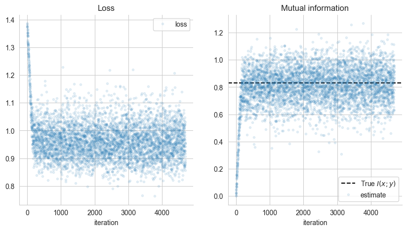

Basic Usage
To use torch_mist in a project:
import torch_mist
print(torch_mist.__version__)
0.1.2
Data
We first define a simple dataset that returns pairs of samples from a bivariate normal distribution.
import torch
from torch.distributions import MultivariateNormal, Normal
rho = 0.9
cov = torch.tensor([
[1, rho],
[rho, 1.]
])
mean = torch.tensor([0., 0.])
x_dim = y_dim = n_dim = 1
p_xy = MultivariateNormal(
mean,
cov
)
p_x = p_y = Normal(0, 1)
true_mi = (
p_x.entropy() + p_y.entropy() - p_xy.entropy()
).sum().item()
print(f"True Mutual Information: {true_mi} nats")
True Mutual Information: 0.8303654193878174 nats
Visualization of the samples
import matplotlib.pyplot as plt
samples = p_xy.sample([100000])
x = samples[:,0]
y = samples[:,1]
plt.scatter(
x[::10], y[::10],
marker='.',
alpha=0.05
)
plt.title("Samples")
plt.xlabel('$x$')
plt.ylabel('$y$');

Defining and training the estimator
from torch_mist import estimate_mi
mi_estimate, estimator, train_log = estimate_mi(
estimator_name='js',
x=x,
y=y,
train_batch_size=128,
evaluation_batch_size=256,
device='cpu',
hidden_dims=[128,32],
neg_samples=16,
return_estimator=True,
return_log=True,
)
Instantiating the js estimator
JS(
(ratio_estimator): JointCritic(
(joint_net): DenseNN(
(layers): ModuleList(
(0): Linear(in_features=2, out_features=128, bias=True)
(1): Linear(in_features=128, out_features=32, bias=True)
(2): Linear(in_features=32, out_features=1, bias=True)
)
(f): ReLU(inplace=True)
)
)
(baseline): ConstantBaseline()
(neg_samples): 16
)
Training the estimator
No improvements on validation, stopping.
Evaluating the value of Mutual Information
import seaborn as sns
sns.set_style('whitegrid')
plt.axhline(y=true_mi, ls='--', color='k', label='True $I(x;y)$')
sns.lineplot(train_log, x='epoch', y='value', hue='type')
plt.xlim(1)
(1.0, 8.35)
print(f"Estimated Mutual Information: {mi_estimate} nats")
print(f"True Mutual Information: {true_mi} nats")
Estimated Mutual Information: 0.8245928197565591 nats
True Mutual Information: 0.8303654193878174 nats
Advanced Usage
Instead of using the estimate_mi function directly, it is possible to manually instantiate the estimators and specify additional details for the training and evaluation procedures.
Instantiating the estimator
We start by defining a simple mutual information estimator based on Deep-InfoMax (JS) with joint critic architecture.
from torch_mist.estimators import JS
from torch_mist.critic import JointCritic
from torch import nn
# First we define a critic network that maps pairs of samples to a scalar
critic = JointCritic(
joint_net=nn.Sequential(
nn.Linear(x_dim + y_dim, 64),
nn.ReLU(True),
nn.Linear(64, 64),
nn.ReLU(True),
nn.Linear(64, 1),
)
)
# We also specify the number of Monte Carlo samples to use for the estimation of the partition function
neg_samples = 16
# Then we pass it to the Jensen-Shannon estimator
estimator = JS(
critic=critic,
neg_samples=neg_samples
)
print(estimator)
JS(
(ratio_estimator): JointCritic(
(joint_net): Sequential(
(0): Linear(in_features=2, out_features=64, bias=True)
(1): ReLU(inplace=True)
(2): Linear(in_features=64, out_features=64, bias=True)
(3): ReLU(inplace=True)
(4): Linear(in_features=64, out_features=1, bias=True)
)
)
(baseline): ConstantBaseline()
(neg_samples): 16
)
Training
We now define the dataloaders, optimizer and train the estimator with a simple training loop
from tqdm.autonotebook import tqdm
from torch.optim import AdamW
from torch_mist.utils.data import SampleDataset
from torch.utils.data import DataLoader
# We use a simple wrapper to make a torch.utils.data.Dataset object using the pairs of x and y
dataset = SampleDataset({'x': x, 'y': y})
# Then we make a dataloader
dataloader = DataLoader(
dataset,
batch_size=64,
shuffle=True
)
# Use the AdamW optimizer with a learning rate of 5e-4
opt = AdamW(estimator.parameters(), lr=5e-4)
# Train for 3 epochs
n_epochs = 3
# Create an empty log to visualize the training progress
log = []
# For each epoch
for epoch in range(n_epochs):
for data in tqdm(dataloader):
x, y = data['x'], data['y']
# Compute the loss
loss = estimator.loss(x, y)
# And the corresponding estimation of Mutual Information
mi = estimator(x, y)
# Reset the gradients
opt.zero_grad()
# Backpropagate
loss.backward()
# Update the parameters
opt.step()
# Log the loss
log.append({
'iteration': len(log),
'loss': loss.item(),
'estimate': mi.item()
})
Visualization
We can plot loss and estimated mutual information over time
import pandas as pd
f, ax = plt.subplots(1, 2, figsize=(10, 5))
plt.axhline(y=true_mi, ls='--', color='k', label='True $I(x;y)$')
pd.DataFrame(log).plot(x='iteration', y='loss', ax=ax[0], marker='.', ls='', alpha=0.1)
pd.DataFrame(log).plot(x='iteration', y='estimate', ax=ax[1], marker='.', ls='', alpha=0.1)
ax[0].set_title('Loss')
ax[1].set_title('Mutual information')
ax[1].legend()
sns.despine()

Evaluation
We can now evaluate the estimator on the entire dataset
import numpy as np
mi_estimates = []
for data in tqdm(dataloader):
mi_estimates.append(estimator(data['x'], data['y']).item())
print(f"Estimated Mutual Information: {np.mean(mi_estimates)} nats")
print(f"True Mutual Information: {true_mi} nats")
Estimated Mutual Information: 0.8216359116332469 nats
True Mutual Information: 0.8303654193878174 nats